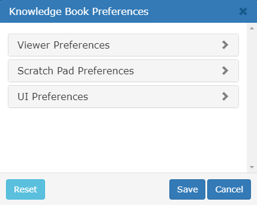

環境設定
Knowledge Bookアプリケーションを使用すると、Knowledge Bookの設定を保存できます。

Knowledge Bookアプリケーションでユーザー プロファイルをクリックし、 [個人設定]をクリックしてKnowledge Bookの設定を変更します。これらの設定はユーザー プロファイルとともに保存され、使用しているインターネット ブラウザやコンピュータに関係なく適用されます。

ビューアの設定
「ビューア設定」アコーディオンを展開して、ビューア設定を変更します。
視聴者の設定 | 関数 |
キャンバスの余白 | ビューアのマージン モードを設定します。
|
点灯 | ビューアの照明モードを設定します。
|
周囲の強さ | このパラメータは、ビューアのアンビエント照明の明るさを調整します。強度を高くするとモデルの視認性と詳細が向上し、強度を低くすると照明が柔らかくなります。 |
エッジシェーダーオン | エッジ シェーダーを有効にすると、3D モデルの輪郭が強調され、複雑なモデルのエッジの視認性が向上します。
エッジ シェーダは、ビューアの投影モードがパースペクティブに設定されている場合にのみ適用されることに注意してください。 |
コンパスオフ | デフォルトでコンパスを非表示にするには、このオプションを選択します。 |
スライダーオフ | デフォルトでズーム スライダーを非表示にするには、このオプションを選択します。 |
メモリ制限 | ナレッジビューをロードするときに使用するメモリのレベルを指定します。推奨レベルと最大レベルで使用されるメモリはブラウザによって異なります。
このメモリ レベルは、視聴者が許容できるメモリの制限です。たとえば、小さなナレッジビューを開くと、メモリ レベルが最大であっても、最小限のシステム リソースが使用されます。
最大メモリ レベルを使用すると、ビューアのパフォーマンスが低下する可能性があるため、注意することをお勧めします。 |
スクラッチパッドの設定
「スクラッチ パッドの設定」アコーディオンを展開して、スクラッチ パッドの設定を変更します。
スクラッチパッドの設定 | 関数 |
フォントファミリー | デフォルトのテキストフォントを選択できます。 |
フォントの色 | デフォルトのテキストの色を選択できます。 |
フォントサイズ | デフォルトのテキスト サイズを選択できます。 |
塗りつぶしの色 | テキスト ブロックと図形のデフォルトの塗りつぶし色を選択できます。 |
線の色 | 図形の境界線のデフォルトの色、または矢印の線の色、および自由描画モードを選択できます。 |
線幅 | 図形の境界線のデフォルトの幅や矢印の線の色、および自由描画モードを選択できます。 |
UIの設定
「UI 設定」アコーディオンを展開して、Knowledge Bookビューアの UI 設定を変更します。
UIの設定 | 関数 |
継承された属性を表示する | このオプションを選択すると、アセット情報パネルに、選択しアセットアセットに表示される属性バーに加えて、親アセットの属性バーも表示されます。 |
自動拡張 | 内容が変更されたときにKnowledge Bookビューアのどのスライドアウト パネルを自動的に展開するかを選択できます。自動展開動作は次のパネルに設定できます。 |
「保存」ボタンをクリックして設定を保存し、これらの設定を現在のセッションに適用します。設定をアプリケーションのデフォルト設定に戻すには、 「リセット」ボタンをクリックします。